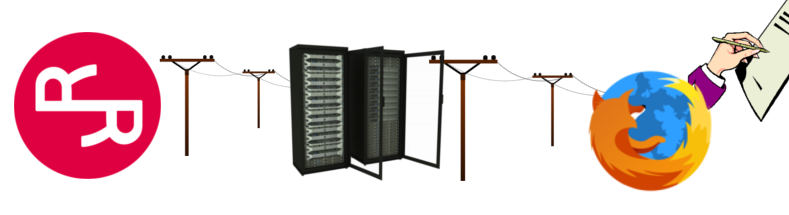

RChain DApps for the Working Web Developer
Joshy Orndorff
Dan Connolly
06 September 2018
The Plan
- Demo and Describe Example Dapps
- Discuss tools we've written
- Learn to Connect your Smart Contract to your Users.
(get into the weeds a little) - Questions / Discussion
- Workshop
Your job: Ask questions frequently.
Nth Caller Dapp

Call in now, 10th caller wins concert tickets!
How nth caller works
- Check out the code
- How to set this up
- Interact via commandline? (up to you)
RChain-API
- Connects contract to users
- Translates gRPC to http
- Roughly equivalent to web3.js
- github.com/JoshOrndorff/RChain-API
- github.com/dckc/RChain-API
Status Dapp
Greg M: We need to reboot social media, and express sentiment on-chain
(Still missing name registry)
RSign Browser Extension
- Make cyrptographic sigs easier for Dapp devs and users
- More realistic security model
Your Turn
- Build Nth caller yourself
- Learn Rholang
- Encourage me and Dan to finish the extension
- Joshy Orndorff (@JoshyOrndorff)
- Dan Connolly (@dckc)